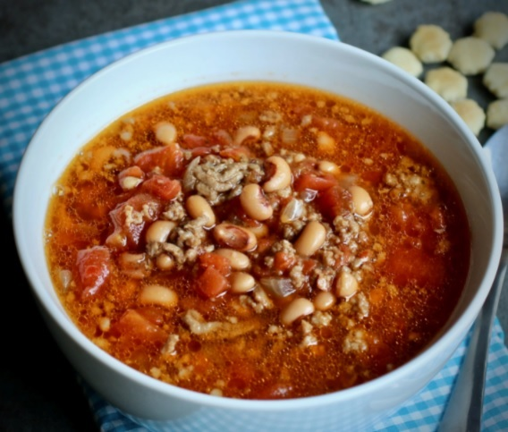

Black-eyed Pea Soup

Description
This is a great New Year's meal! Perfect on a cold winter night. Great comfort food. Serve with corn bread.
Ingredients
- 1 pound bulk pork sausage
- 1 pound ground beef
- 1 large onion, diced
- 4 cups water
- 3 (15 ounce) cans black-eyed peas, drained
- 1 (28 ounce) can diced tomatoes
- 1 (10 ounce) can diced tomatoes with green chile peppers (such as RO*TEL®), undrained
- 1 teaspoon Worcestershire sauce
- ¾ teaspoon garlic salt
- ½ teaspoon salt
- 1 (4 ounce) can chopped green chilies
- 4 teaspoons molasses
- 4 beef bouillon cubes
- ¼ teaspoon ground black pepper
- ¼ teaspoon ground cumin
Steps